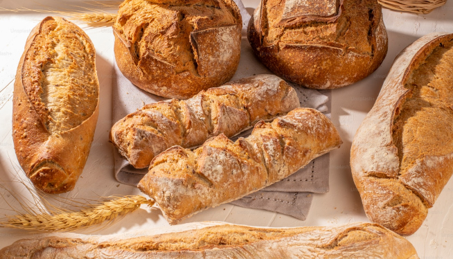
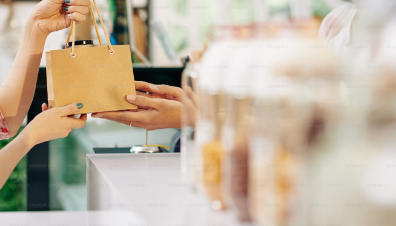
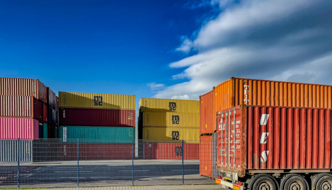

사업분야
SPC삼립의 사업분야를 소개합니다.
- 
-
01
종합식품사업
spc삼립은 최고의 품질과 고객중심, 창의적 도전으로 지속
성장 가능한 경쟁력을 갖춘 글로벌 종합식품회사로
도약하고 있습니다. 샤니, 밀다원, 에그팜 등을 기반으로
제빵사업 역량을 고도화 하고, 그릭슈바인(육가공,HMR),
프레쉬푸드팩토리(신선편의식품) 등 식품 사업을
신성장동력으로 육성하고 있습니다.
-
02
점포사업
떡 프랜차이즈 브랜드 '빚은,우동 브랜드'하이면, 창고형
베이커리 '베이커리 팩토리' 등에서 최근 변화하는 라이프
스타일&소비 트렌드를 반영한 파인 캐주얼 스내킹 스토어
'시티델리'와 LA에서 온 오리지널 에그샌드위치
'에그슬럿'까지 점포사업을 확대하고 있습니다' - 
-
03
컨세션사업
2019년 가평휴게소 사업을 수주하면서 본격 컨세션 사업을
운영하고 있습니다. 휴게소 방문 고객들의 편안하고 즐거운
여행길을 제공하고자 SPC그룹 브랜드 배스킨라빈스,
던킨도너츠, 빚은을 비롯해 카카오프랜즈, 북촌손만두 등
다양한 매장 영역을 넓혀가고 있습니다.
-
04
서비스사업
SPC GFS는 식품유통 전문 회사롤 지역 원료 소싱에서
시작해 식자재 유통, 프랜차이즈 가맹점 거래 및 컨세션
사업에 이르는 Farm to Table을 실천하고 있습니다
- 
-
05
수출사업
높은 품질, 안전 기준을 통해 엄격한 품질 관리를 기반으로
SPC삼립은 여러 제품을 해외로 수출합니다. 대표적으로
빵, 약과, 빚은 떡, 하이면 누들 등을 수출 중이며, 미국, 유럽,
중화권, 동남아 등 다양한 나라의 입맛을 사로잡고
있습니다.